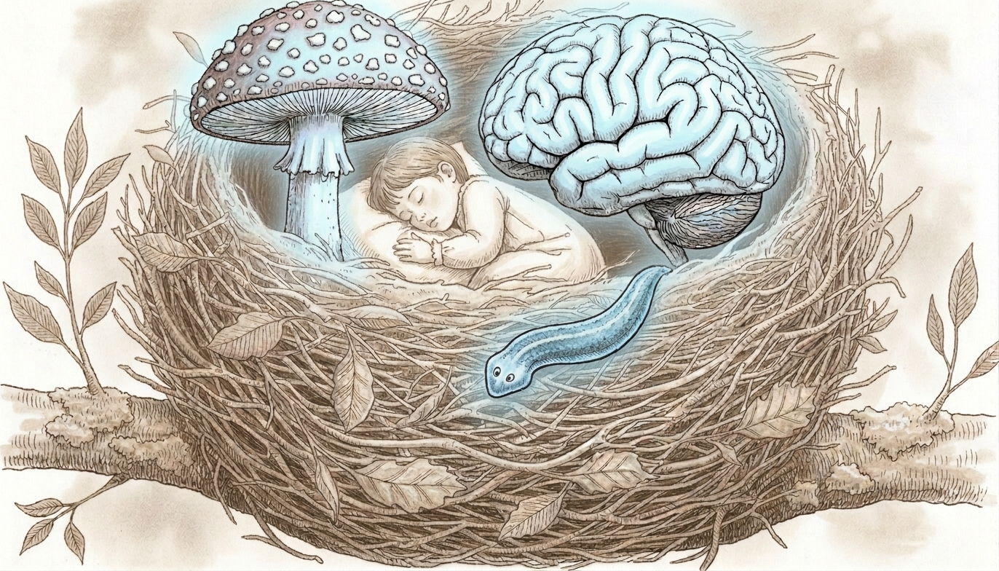

Lines of enquiry · Pl. 01
Psychedelic Research

Psychedelic drugs such as psilocybin and LSD have been around for thousands of years, but started to make an impact in Western medicine in the 1950s. After a gap where, due to restrictive legislation, research was virtually prohibited, research has gone through a renaissance in the last decade, mainly driven by its unique therapeutic properties. Multiple clinical studies have found that in patients with depression and anxiety, psychedelic drugs can reduce symptoms for up to 6 months after a single dose.
Our research on psychedelic drugs aims to better understand what these drugs do and how they affect the brain. The research has two different strands:
- Because psychedelic drugs are still illegal in many parts of the world, we analyse self-reports that are freely available on online platforms such as Reddit and Erowid.
- We make use of the extraordinary plasticity of planaria to investigate the (long-lasting) effects of psilocybin on both behaviour and the brain, with a special emphasis on neurogenesis.